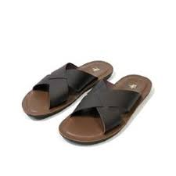
Sandal kulit · Natural
Jurnal ABHE Footwear
Cerita, gagasan, dan hal-hal kecil yang kami temui dalam perjalanan merancang alas kaki untuk keseharian.
Jelajahi semua cerita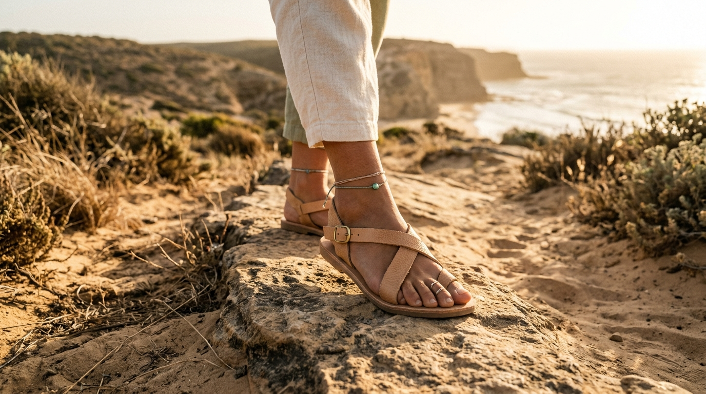
Bergerak dengan penuh perhatianKoleksi ABHE
Lihat lebih dekat koleksi pilihan kami.
Ditampilkan sebagai inspirasi, bukan untuk dibeli.
01 · Everyday
Siluet sederhana untuk ritme langkah sehari-hari.

Sandal kulit · Natural
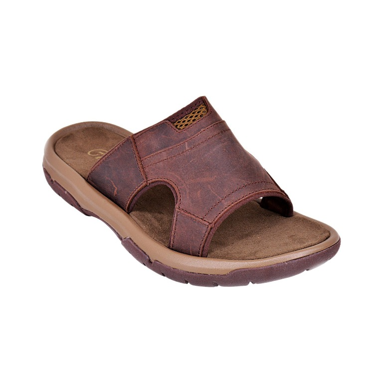
Sandal kasual · City
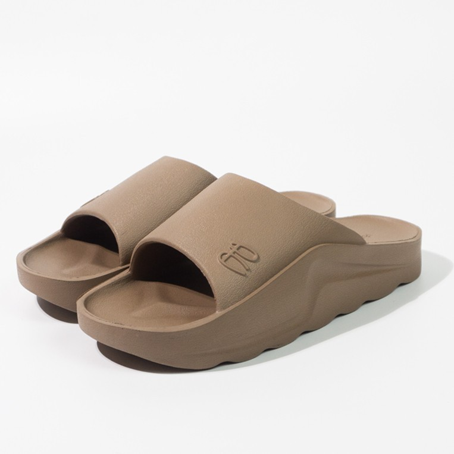
Sandal santai · Soft
02 · Outdoor
Terinspirasi jalur alam dan semangat menjelajah.
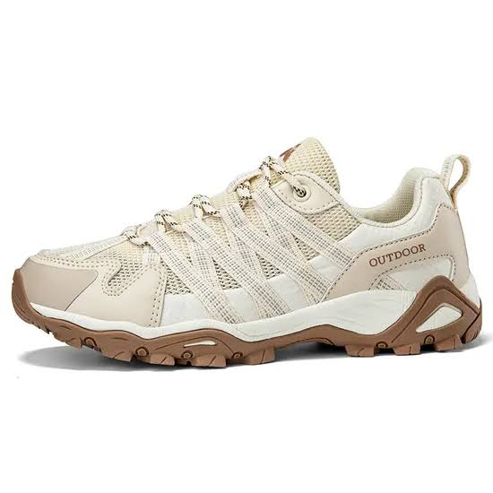
Sandal jelajah · Trail

Sandal outdoor · Earth
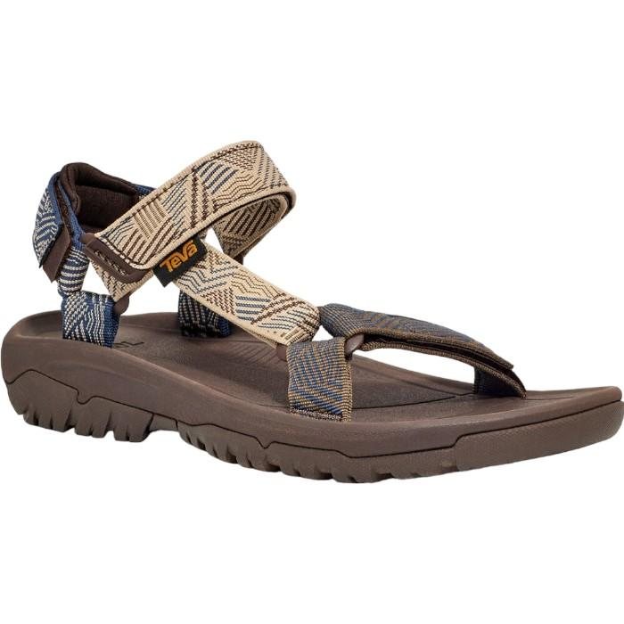
Sandal jelajah · Open
03 · Weekend
Nuansa ringan untuk jeda dan perjalanan santai.
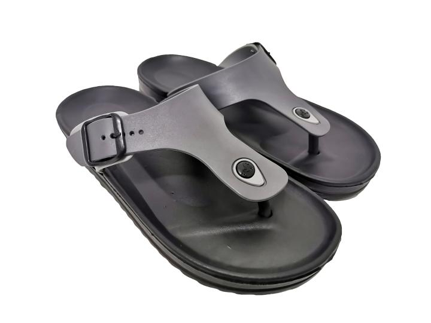
Sandal santai · Coast
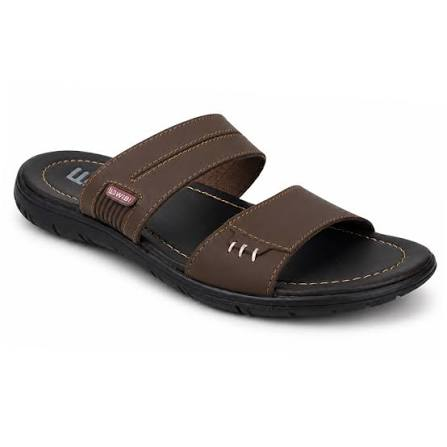
Sandal kulit · Relaxed
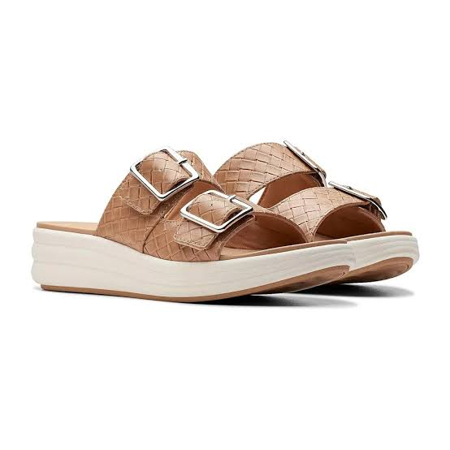
Sandal kasual · Easy
04 · City
Bentuk bersahaja untuk gerak dan suasana kota.
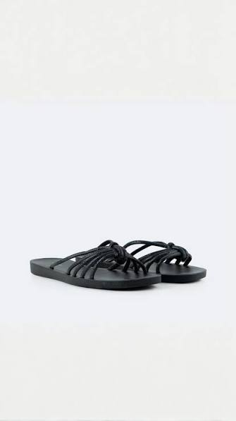
Sandal kota · Urban
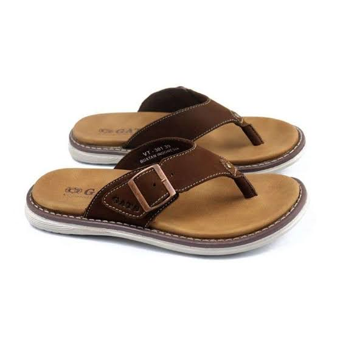
Sandal kulit · Classic
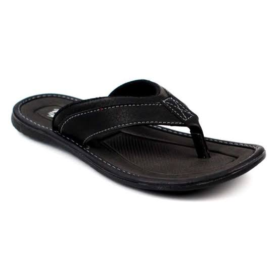
Sandal kasual · Daily
Dari ruang redaksi kami

Di tengah hari yang serba cepat, berjalan memberi kita alasan sederhana untuk kembali hadir pada sekitar.
Baca cerita
Material yang baik punya karakter sendiri. Perawatan sederhana membantu kita mengenal dan menggunakannya lebih lama.
Baca cerita
Bentuk yang sederhana lahir dari banyak pertimbangan: fungsi, kenyamanan, dan bagaimana sebuah benda terasa setelah dipakai.
Baca ceritaTentang ABHE